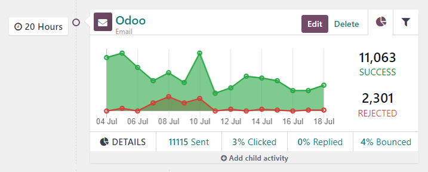
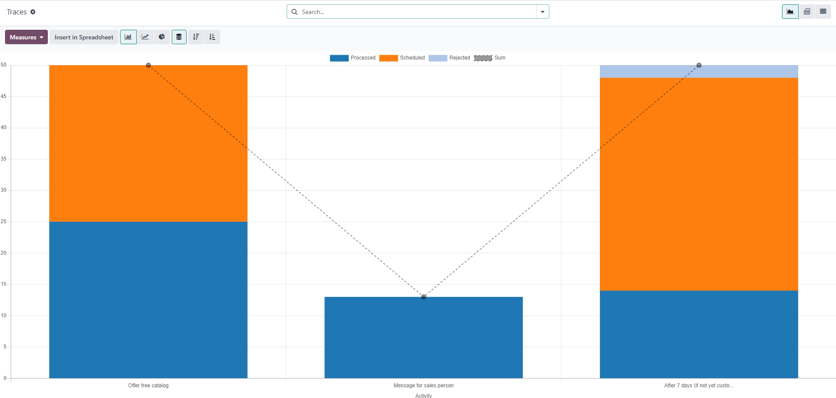

Métricas de campaña¶
Las métricas de campaña son estadísticas detalladas y análisis dentro de una campaña de marketing que miden el éxito y efectividad. Las actividades de marketing activadas completan bloques de actividad relevantes con métricas en tiempo real en el formulario de detalle de la campaña.
Análisis de actividad¶
En la sección flujo de trabajo de un formulario de detalle de campaña en la aplicación Automatización de marketing, puede encontrar datos útiles en cada bloque de actividad individual, como el número de comunicaciones enviadas, el porcentaje de mensajes a los que se han hecho clic, y más.
A la izquierda del bloque de actividad, se muestra la hora de activación configurada como una duración (horas, días, semanas o meses) si corresponde al periodo después de que comience el flujo de trabajo.
Nota
Si el tiempo de activación depende de otra actividad o acción de activación (por ejemplo, correo: respondido, etc.), se muestra el tiempo, junto con la acción necesaria para que esa actividad se active (por ejemplo, se respondió después de 2 horas).

En el bloque de actividad, un icono representa cada tipo de actividad. El icono ✉️ (sobre) significa que la actividad es un correo electrónico. Los tres pequeños iconos ⚙️ (engranaje) entrelazados significan que la actividad es una acción interna. El icono pequeño 📱 (móvil) significa que la actividad es un mensaje de texto.
Truco
El nombre del tipo de actividad también se muestra en una fuente más pequeña debajo del título de la actividad.
Al lado del icono de actividad, en la parte superior del bloque, encontrará el título de la actividad y, a su lado derecho verá los botones editar y eliminar.
Haga clic en editar para abrir el formulario emergente abrir: actividades para esa actividad específica. Haga clic en el botón eliminar para eliminar completamente esa actividad específica del flujo de trabajo.
Pestaña del gráfico de actividades¶
En cada bloque de actividades, verá la pestaña gráfico (icono de gráfico circular) de manera predeterminada, en esta podrá ver todas las métricas relevantes en un gráfico simple de líneas. Las métricas de éxito están representadas en verde y las métricas rechazadas son de color rojo.
Las representaciones numéricas tanto para las actividades exitosas como para las rechazadas se muestran del lado derecho del gráfico de línea.
Truco
Si pasa el ratón por encima de cualquier punto del gráfico de línea del bloque de actividades, aparecerá un desglose con anotaciones para esa fecha en específico.

Debajo del gráfico del bloque de actividades, para los tipos de actividad de correo electrónico o SMS, habrá una línea de datos numéricos accesibles que proporciona una vista general de la actividad de la campaña, la cual incluye: Enviado (numérico), Se hizo clic (porcentaje), Contestados (porcentaje) y Devueltos (porcentaje).
Truco
Al hacer clic en cualquiera de esas estadísticas en la línea de DETALLES debajo de la línea del gráfico, se abrirá una página por separado que contiene cada registro específico para ese punto en particular de datos.
Pestaña del filtro de actividades¶
Luego en la pestaña Gráfico en el bloque de actividades, hay una opción para abrir una pestaña de filtros (representado por un icono de filtro/embudo).

Al hacer clic en la pestaña Filtro en el bloque de actividades, aparecerán filtros específicos para esa campaña de actividades en particular y cuántos registros en la base de datos coinciden con esos criterios específicos.
Truco
Al hacer clic en el enlace de registros debajo del filtro que aparece, aparecerá una ventana emergente por separado que contiene una lista de todos los registros que coinciden con las reglas de esa campaña específica de actividades.
Rastreador de enlaces¶
Odoo rastrea todas las URLs que se usan en las campañas de marketing. Para acceder y analizar todas esas URLs, vaya a . Al hacerlo, aparecerá una página de estadísticas de enlaces donde podrá analizar todas las URLs relacionadas con esa campaña.
La vista de gráfico de barras es la predeterminada de la página estadísticas de enlaces, pero hay varias opciones diferentes disponibles en la esquina superior izquierda. Hay una opción para ver las estadísticas como un gráfico de línea o un gráfico circular.
Además, también hay una opción para ver las estadísticas apiladas y los datos se pueden ordenar de manera descendiente o ascendiente.
En la extrema izquierda de las opciones de vista, hay un menú desplegable de medidas con las opciones disponibles para ver el Número de clics o el Número total. Del lado derecho del menú, podrá agregar cualquier dato a la hoja de cálculo si hace clic en el botón Insertar en hoja de cálculo.
También, en la esquina superior derecha de la página estadísticas de enlace, del lado derecho de la barra de búsqueda, hay opciones adicionales entre las cuales podrá escoger: la vista de gráfico, de tabla dinámica y de lista.
Seguimientos¶
Odoo rastrea todas las actividades que se usan en cada campaña de marketing. Puede acceder y analizar los datos relacionados a esas actividades en la página de Seguimientos, la cual se encuentra en .
La vista predeterminada en la página de Seguimientos es el gráfico de barras, pero hay diferentes opciones de vista disponibles en la esquina superior izquierda. Está la opción de ver las estadísticas como gráfico de línea o circular.
En la parte superior del gráfico, hay claves por colores que le dicen al usuario qué actividades se procesaron, programaron y rechazaron. También hay un indicador que le informa a los usuarios la suma de ciertas actividades.
Además de las varias opciones de vista en la esquina superior izquierda de la página Seguimientos, también está la opción de ver las estadísticas apiladas y puede ordenar los datos de manera descendiente o ascendiente.
En la extrema izquierda de las opciones de vista, hay un menú desplegable de medidas con las opciones disponibles para ver el ID del documento o el Número total. Del lado derecho del menú, podrá agregar cualquier dato a la hoja de cálculo si hace clic en el botón Insertar en hoja de cálculo.
También, en la esquina superior derecha de la página estadísticas de enlace, del lado derecho de la barra de búsqueda, hay opciones adicionales entre las cuales podrá escoger: la vista de gráfico, de tabla dinámica y de lista.
Participantes¶
Odoo rastrea todas las actividades que se usan en cada campaña de marketing. Puede acceder y analizar los datos relacionados a esas actividades en la página de Participantes, la cual se encuentra en .

La vista predeterminada en la página de Participantes es el gráfico de barras, pero hay diferentes opciones de vista disponibles en la esquina superior izquierda. Está la opción de ver las estadísticas como gráfico de línea o circular.
En la parte superior del gráfico, hay un código de colores que describe el tipo de participantes que se encuentran en el gráfico.
En la extrema izquierda de las opciones de vista, hay un menú desplegable de medidas con las opciones disponibles para ver el ID del registro o el Número total. Del lado derecho del menú, podrá agregar cualquier dato a la hoja de cálculo si hace clic en el botón Insertar en hoja de cálculo.
También, en la esquina superior derecha de la página estadísticas de enlace, del lado derecho de la barra de búsqueda, hay opciones adicionales entre las cuales podrá escoger: la vista de gráfico, de tabla dinámica y de lista.